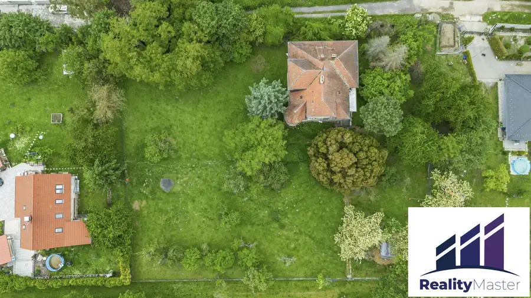
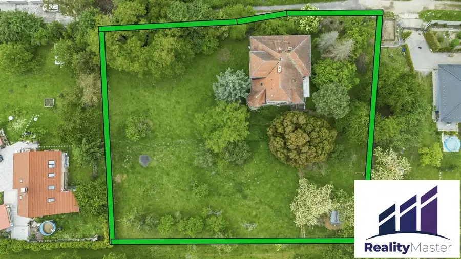
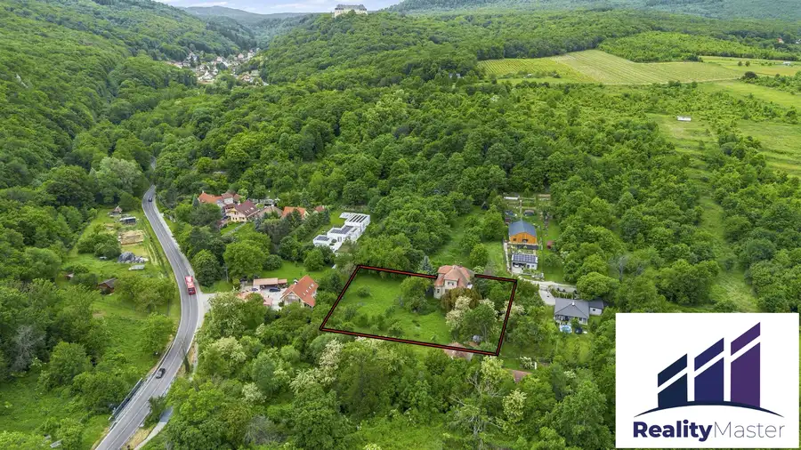
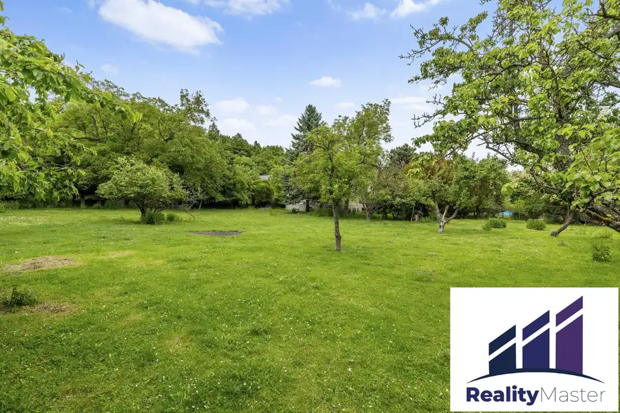
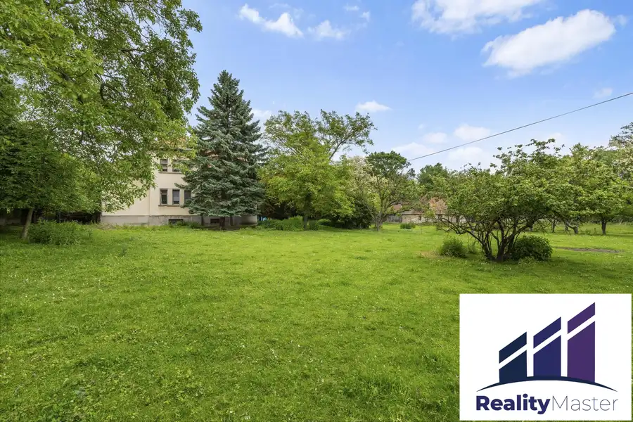
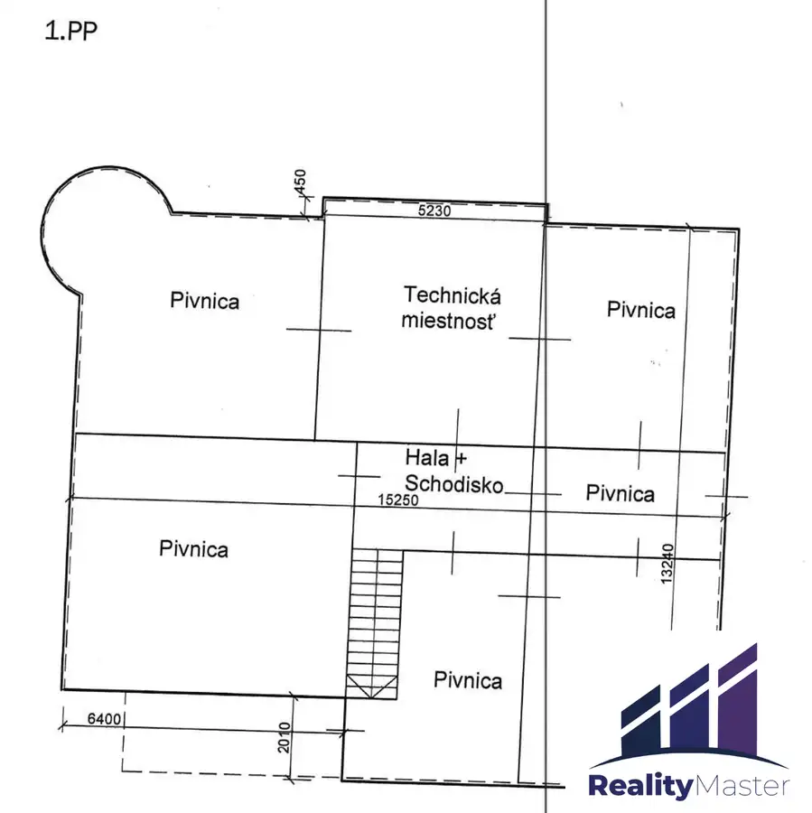
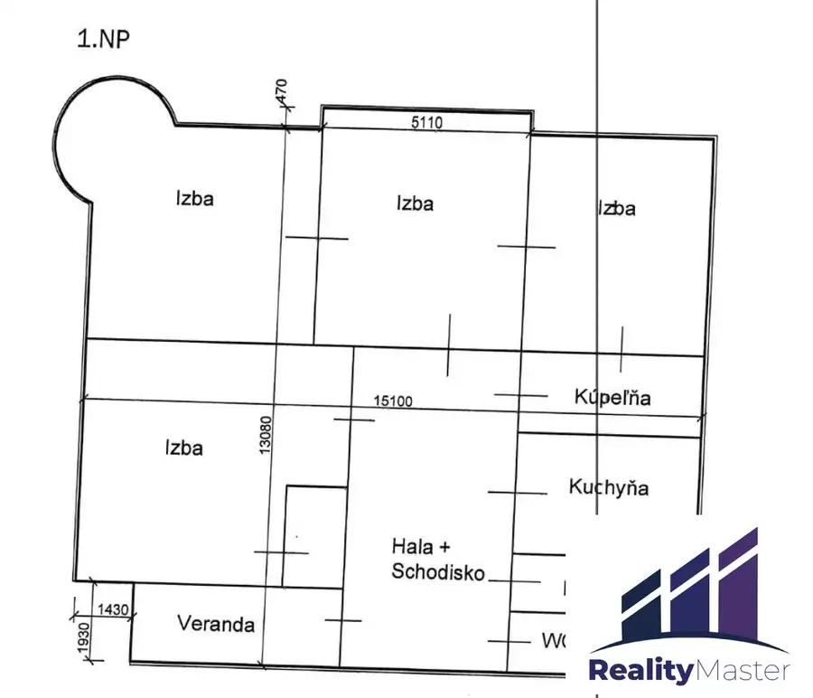

Sídlo pod Červeným Kameňom na krásnom pozemku 3567m²
Píla







- Plocha480 m²
- StavPôvodný stav
- VlastníctvoOsobné
O nehnuteľnosti
RealityMaster ponúka exluzívne na predaj rodinné sídlo v pôvodnom stave na pozemku 3567m2, pod lesom a v blízkosti hradu Červený Kameň v obci Píla.Stavba rodinného domu bola zhotovená okolo roku 1940 a je v pôvodnom stave. Nový majiteľ môže plnohodnotne vyťažiť potenciál stavby a nadštandardne veľkého pozemku. Nehnuteľnosť môže poslúžiť ako honosné rodinné sídlo, prípadne ako zariadenie dlhodobej starostlivosti či podobný účel. Pozemok je rovinatý, udržiavaný, v pokojnej lokalite pod lesom. Prístupová cesta zo severnej strany pozemku je vo vlastníctve Slovenskej republiky, v riešení je aj prístupová cesta z južnej strany s možnosťou spoluvlastnítva pre nového majiteľa. Rodinný dom so zastavanou plochou 210m2 má jedno podzemné podlažie - je plne podpivničený a dve nadzemné podlažia. Druhé nadzemné podlažie je čiastočné. Dom je postavený z tehál, obvodové múry hrúbky 450-600mm. Na 1. PP (pivnica) 195m2 sa spolu nachádza až 6 miestností, na 1. NP (prízemie) 200m2 4 izby + kúpeľňa, kuchyňa, komora, WC, hala so schodiskom, veranda a na 2.NP (poschodie) 88m2 sú 2 plnohodnotné izby + chodba so schodiskom. V dome je zavedená elektrina a plyn. Na pozemku sa nachádza kopaná studňa, zberná nádrž na daždovú vodu, betónová žumpa. Prípojka na mestskú vodu je cca 50m od pozemku. Dom je v osobnom vlastníctve, kúpou ihneď voľný. Dom je dlhodobo neobývaný a neudržiavaný, s pôvodným vybavením v interiéri. Možnosť dohodnúť sa na vyprataní. K dispozícii kompletný popis miestností, zariadenia a popisu nehnuteľnosti zo znaleckého posudku a viac fotografií v RK. Cena 339 000 EUR je finálna vrátane provízie RK. V cene poskytujeme kompletný právny servis, vypracovanie rezervačnej a kúpnej zmluvy, vklad do katastra vrátane správnych poplatkov. Prevedieme Vás celým procesom predaja rýchlo a bezpečne. Radi Vám pomôžeme aj s bezplatným hypotekárnym poradenstvom a výberom čo najvhodnejšieho financovania Vašej novej nehnuteľnosti. Ak Vás naša ponuka zaujala, obhliadku si môžete dohodnúť na tel. č.: 0944 689 740Pre viac info e-mailom na: bokrossamuel@realitymaster.sk
Parametre
- Druh
- Rodinný dom
- Dátum zverejnenia
- 23. 06. 2025
- Energetická náročnosť
- Z klasických materiálov
- Energetický certifikát budovy
- nie je
- Plocha pozemku
- 3567 m²
- Počet izieb / miestností
- 6
- Počet nadzemných podlaží
- 1
- Počet podzemných podlaží
- 1
- Rok výstavby
- 1940
- Stav nehnuteľnosti
- Pôvodný stav
- Terén pozemku
- Rovinatý
- Typ
- Predaj
- Typ konštrukcie
- Tehlová
- Vlastníctvo
- Osobné
- Vybavenie
- Pivnica, Špajza, Sklad
- Vykurovanie
- Lokálne
- Zastavaná plocha
- 210 m²
- Úžitková plocha
- 480 m²